Section: Home Routes Alternative Create
For creating a routing with alternative payment methods select the values of fields below
| Field | Description |
|---|---|
| Account Id * | Select the account from the list |
| Payment Method * | Select the payment method |
After selecting the credentials press the button 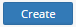
Screenshot from Admin Portal :
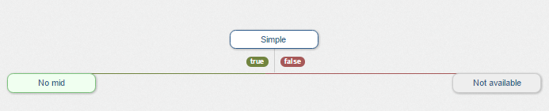
Click on the field to select the rule 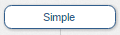
List of rules for alternative routing
| Rule | Description |
|---|---|
| Random | You can specify the percentage of the transactions that will go to the left MID. Others will be redirected to the right MID. |
| Amount | Configure by the amount of transaction |
| Currency | You a re able to select few currencies for the MID |
| Simple | This rule will always return mid from success result node |
| AffId | The transactions go to Affiliate MID. You should input the values of AffId |
| Country | Select the country from the list to set up the routing by country |
| Product name | Set up the routing by name of the product |
| Website | Set up the routing by name of the website |
| Type of transaction | Set up the routing by transaction's type |
Screenshot from Admin Portal :
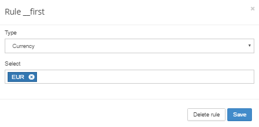
For saving the rule press the button
For deleting the rule press the button 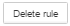
Next step is to click on the MID field of success branch and select the MID 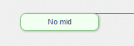
Screenshot from Admin Portal :
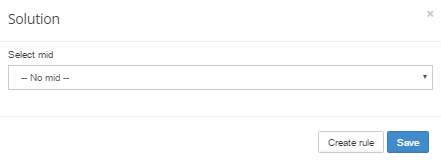
For saving the MID press the button
For creating a new one rule press the button 
Also set up a new one MID to false branch just click on the MID field 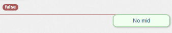
Example of alternative routing settings
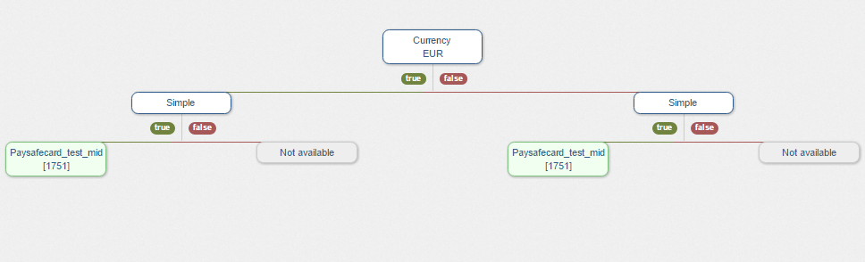
Note | You are able to create as many rules as you want !
For naming a revision of alternative routing settings fill up the field
After set up the settings of routing press the button 
You are able to watch revision history at section Revision list
Section: Home Routes Alternative List
Description:
Section list allows to find all alternative routing settings.
For searching an alternative routing settings select the filter
| Field | Description | Screenshot |
|---|---|---|
| Gates | select by the gate | 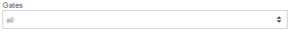 |
| Merchants | select by the merchant | 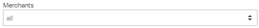 |
| Accounts | select by the account | 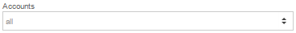 |
| Account states | select by the account state
|
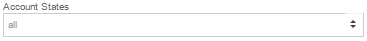 |
| Methods | Select the method of alternative payments | 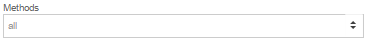 |
| Page limit | Select the count of strings on a page | 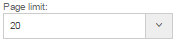 |
After selecting filters settings press the button 
Example of searching result
| Gate | Merchant | Account | Payment Method | Actions |
|---|---|---|---|---|
| Live gate | ABC | ABC_ACC_LIVE | AlterPay | |
| Live gate | NBV merchant | NBV_ACC_LIVE | PayPal | |
| Live gate | AST merchant | AST_ACC_LIVE | CoinPay |
Details:
Button - allows to watch the routing settings. More information at section: Home Routes Alternative Create.